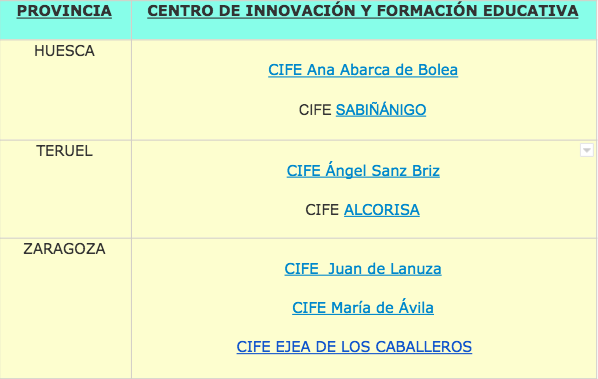
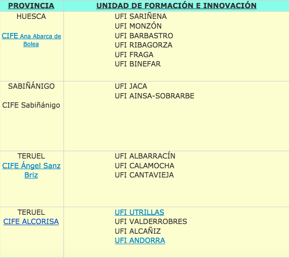
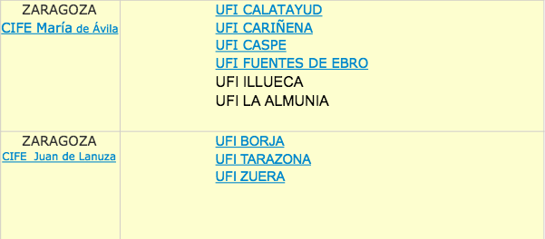

Unidad 4. Normativa, estructura y funcionamiento de la red de formación del profesorado.
No vamos a incidir en la normativa que sustenta la estructura de la red. En esta unidad vamos a abordar la red en sí misma, su estructura y la normativa por la que se rige.
El Plan Marco Aragonés de Formación del Profesorado, desarrollando el Decreto 105/2013, dice en su apartado 5 que la red aragonesa de formación del profesorado la forman:
1) El Servicio de Formación del Profesorado de la Dirección General de Personal y Formación del Profesorado. Es lo que llamamos “Servicios Centrales”. Su ámbito de acción es autonómico y se encargan de coordinar las líneas de actuación de toda la red. Se ubican físicamente en Zaragoza, en el “edificio de la Expo” (Avda Ranillas 5 D. 3a planta. Zaragoza 50018)
2) Las asesorías de formación de los Servicios Provinciales. En cada provincia hay una asesoría y se ubican en la Unidad de Programas de cada Servicio Provincial. Su ámbito es provincial y se encargan de la coordinación de líneas de actuación de la provincia.
3) Centros de Innovación y Formación Educativa (CIFE) territoriales y Unidades de Formación e Innovación (UFI). Su ámbito de gestión está delimitado a los centros que atienden directamente. Los CIFE los integra un equipo pedagógico formado por la persona que lo dirige, asesores que actúan en un mismo CIFE ocupando asesorías y asesorías que actúan individualmente en un ámbito territorial asignado (UFI). Las plazas se cubren en comisión de servicios entre las personas que superan un proceso de concurrencia competitiva que se convoca cada año para cubrir las vacantes que resultan. Los CIFE territoriales se regulan por ORDEN de 18 de julio de 2014, que se modifica por ORDEN de 21 de mayo de 2015. Atendiendo a estas órdenes se elaboran las convocatorias anuales de selección de asesores. El artículo 22 del mencionado Decreto 105/2013 recoge las funciones de los asesores. En la actualidad estos son los CIFE territoriales y las UFI que dependen de ellos:
  
4) CIFE específicos y proyectos de formación. Son centros de ámbito autonómico con un cometido concreto.
- Centro Aragonés de Tecnologías para la Educación. (CATEDU). Su cometido es dar soporte y asesoramiento tecnológico a la red de formación. Es el centro que organiza la formación online (Aularagón) y otros servicios de soporte al profesorado, como aramoodle, wordpress…
- Centro de Innovación para la Formación Profesional de Aragón (CIFPA). Entre otros cometidos se vincula a la red de formación del profesorado para atender a los Centros Integrados de Formación Profesional y al profesorado de Formación Profesional de todo Aragón.
- Centro Aragonés de Lenguas Extranjeras para la Educación.(CARLEE). Su cometido es la formación en competencia y metodologías que capaciten al profesorado para poder impartir programas bilingües en francés e inglés. También se ocupan de la formación del profesorado de inglés en toda la enseñanza no universitaria de Aragón.
- Centro Aragonés de Formación para el Profesorado de Enseñanzas Artísticas (CAREA). Es el más incipiente de los proyectos y se ocupa de atender las necesidades formativas del profesorado de enseñanzas artísticas.
5) Los Centros Educativos. Son parte de la red de formación. Red, base y finalidad de la red. Y lo son a través de los Planes de Formación y de sus Coordinadores/as de Formación.
Planes de Formación. Cada centro elabora, tras un análisis de sus necesidades de formación un plan para desarrollar a lo largo del curso. En ese Plan intervienen toda la Comunidad Educativa y los agentes que intervienen en el Centro Educativo, con la coordinación del CIFE de referencia.
Coordinadores de Formación. (COFO). Sus funciones están delimitadas en el artículo 24 del Decreto 105/2013:
a) Contribuir a la detección de necesidades formativas del centro y colaborar con el equipo directivo en la definición de sus prioridades.
b) Elaborar, en colaboración con el equipo directivo, el Plan de Formación de Centro.
c) Promover la participación del profesorado en los Proyectos de Formación de Centro y otras modalidades formativas en colaboración con los asesores de los Centros de Innovación y Formación Educativa.
d) Estimular la formación, la innovación y la investigación educativas para la mejora en la práctica docente que contribuya a la adquisición de competencias por parte del alumnado.
e) Liderar los procesos de formación del profesorado contribuyendo a la creación de un clima de colaboración y participación.
f) Colaborar con el equipo directivo en la evaluación del Plan de Formación del Centro.
g) Coordinar las prácticas académicas externas de los estudiantes universitarios que se desarrollen en el centro, así como los procesos de acompañamiento de profesores noveles que se establezcan.
h) Coordinar con el Centro de Innovación y Formación Educativa la realización, seguimiento y evaluación de las actividades formativas que se realicen en su centro.
i) Asistir a las reuniones de coordinación a las que sea convocado por el Centro de Innovación y Formación Educativa.
j) Formar parte del equipo pedagógico del Centro de Innovación y Formación Educativa, si fuera propuesto para ello.
En función de las Instrucciones de Organización y Funcionamiento de cada etapa educativa se establece la compensación horaria del Coordinador de Formación en la misma y el desempeño del cargo se recoge como mérito en determinados procesos en concurrencia competitiva.. En los Institutos de Enseñanza Secundaria, además, son los Jefes del Departamento de Innovación y Formación Educativa según la ORDEN ECD/401/2016.
6) Universidades y entidades colaboradoras. La red de formación del profesorado la integran también las Universidades y aquellas entidades que bien mediante convenio o bien mediante la concurrencia a la convocatoria que se publica al efecto realizan actividades homologadas a efectos de formación. Para ello las entidades deben serlo sin ánimo de lucro y deben tener entre sus estatutos la finalidad de la formación. La lista de entidades colaboradoras con las que existe convenio es pública y puede consultarse en www.educaragon.org